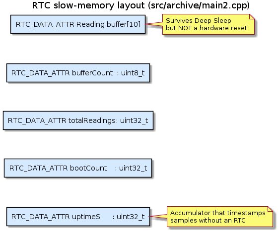

Introduction
Periodic-wake environment datalogger implementing Variant 2 of RUS-TVZ Lab 2 ("Upravljanje potrosnjom energije mikrokontrolera" - Power management of microcontrollers). The firmware demonstrates an event-driven control flow where the ESP32 spends most of its time in a low-power sleep mode and only wakes periodically to acquire a temperature + humidity sample from a DHT22, buffer it, and dump the last ten samples to the serial port in one block.
Two source variants for two sleep modes
The project ships two implementations of the same datalogger because the live-demo platform (Wokwi) and the target deployment platform (real ESP32 silicon) impose different constraints on which ESP32 sleep mode is practical.
| File | Sleep mode | Interval | Storage | Built by default |
|---|---|---|---|---|
src/main1.cpp | Light Sleep (esp_light_sleep_start) | 3 s | plain static SRAM | Yes |
src/archive/main2.cpp | Deep Sleep (esp_deep_sleep_start) | 60 s | RTC_DATA_ATTR ring buffer | No (-e esp32-realhw) |
The two files are genuinely different sleep-mode demonstrations, not just cadence variants:
- **
src/main1.cpp(Wokwi demo, Light Sleep)** -esp_light_sleep_start()pauses the CPU but does not reset the chip. The call returns on timer wake with SRAM andmillis()preserved, so the ring buffer lives in ordinary static storage andsetup()runs only once. Wi-Fi is explicitly disabled viaWiFi.mode(WIFI_OFF)so the active phase only pays for the CPU- sensor + LEDs.
- **
src/archive/main2.cpp(real hardware, Deep Sleep)** -esp_deep_sleep_start()powers most of the chip down and triggers a reset on wake.setup()runs again every cycle; cross-cycle state survives only because the ring buffer, counters, and uptime accumulator are taggedRTC_DATA_ATTR. This is the firmware that would be flashed to an actual ESP32 in the field for the lowest possible average current.
Why split by sleep mode instead of cadence
On a bare ESP32-WROOM module Deep Sleep is ~80x lower current than Light Sleep (~10 uA vs ~0.8 mA). For battery-powered deployment the Deep Sleep path is the only one that makes sense - but it is also the one that interacts badly with Wokwi:
- Deep Sleep resets the chip on every wake. Correct behaviour, but visually noisy in Wokwi: the boot ROM relogs and the application banner reprints every cycle. Cross-cycle state must live in
RTC_DATA_ATTRto survive the reset. - Wokwi has a TG1WDT-vs-sleep race. TG1 main watchdog remains armed across some reset paths in the simulator and can fire during the sleep window, producing a
TG1WDT_SYS_RESETinstead of a cleanDEEPSLEEP_RESET- which on Wokwi also wipes the RTC slow memory the application is relying on.
Light Sleep sidesteps both: there is no reset, no banner reprint, no RTC_DATA_ATTR requirement, and no watchdog race. That makes it the better choice for a live Wokwi demonstration. Deep Sleep remains the correct choice for actual silicon where neither Wokwi quirk applies and where the lower sleep current matters.
Why Wi-Fi is explicitly disabled (Light Sleep variant)
Arduino-ESP32 brings the Wi-Fi radio up in STA mode at boot even if the application never calls WiFi.begin(). The RF front-end keeps drawing tens of milliamps until something stops it. The Light Sleep variant calls WiFi.mode(WIFI_OFF) early in setup() so that Light Sleep can actually realise its ~0.8 mA floor instead of being pinned to whatever the radio happens to be doing. The Deep Sleep variant inherits Wi-Fi-off behaviour from the Deep Sleep call itself (it powers the radio down regardless), so an explicit WiFi.mode(WIFI_OFF) is not required there.
Lab requirements vs. implementation
| Requirement (from the spec) | Where it lives |
|---|---|
| Sleep mode (ESP32: Light / Deep / Modem) | esp_light_sleep_start() in src/main1.cpp; esp_deep_sleep_start() in src/archive/main2.cpp |
| Wake source: timer | esp_sleep_enable_timer_wakeup() in both files |
| Simulate environmental readings | DHT22 part in diagram.json, Adafruit DHT library |
| Store last 10 measurements | Ring buffer of 10 Reading entries in both files |
| Reduce idle current draw | WiFi.mode(WIFI_OFF) in src/main1.cpp; Deep Sleep does this implicitly in main2.cpp |
| Use RTC memory on ESP32 | RTC_DATA_ATTR qualifiers in src/archive/main2.cpp (required for Deep Sleep) |
| Print + reset buffer after 10 samples | dumpAndReset() in both files |
| Separate phases: active / sleep / wake | performReading() / lightSleep() markers (main1); cold-vs-timer branch (main2) |
Do not use only delay() for time control | Real sleep API call runs every cycle in both files |
System diagrams
State machine

Program flow (Deep Sleep variant - real HW)

Program flow (Light Sleep variant - Wokwi demo)

Persistent memory layout (Deep Sleep variant)

The Light Sleep variant has no equivalent layout: SRAM is preserved across esp_light_sleep_start(), so all storage is plain static.
Wokwi simulator limitations
The lab requirements explicitly require a "Wokwi-simulator limitations" section in the report. The relevant ones for this variant are:
- No power measurement. Wokwi does not model current draw, so none of the metrics that would justify either sleep mode (milliamps awake, microamps asleep, theoretical battery life) can be obtained in simulation. Real-circuit measurement (a current meter, or a tool like ARM Energy Profiler) is required. The battery-life numbers in README.md are datasheet-derived estimates, not measurements.
- Deep Sleep is visually noisy and races a watchdog. It resets the chip on every wake (correct behaviour) and reprints the boot banner each cycle. Wokwi also has a watchdog-vs-sleep race that can produce
TG1WDT_SYS_RESETinstead of a cleanDEEPSLEEP_RESET, wiping RTC memory.src/main1.cppuses Light Sleep to sidestep both effects for the live demo;src/archive/main2.cppkeeps Deep Sleep because that is the correct mode on real silicon, where these Wokwi-specific quirks do not exist. - DHT22 readings are synthetic. Wokwi's DHT22 part returns the
temperature/humidityvalues configured indiagram.json, not real environmental data. The logic of the datalogger (buffering, dumping, timestamping) is fully testable; the content of the readings is not realistic.
- Date
- 2026
- Version
- 2.1